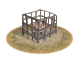

RTR: Imperium Surrectum
RTR: Imperium SurrectumSlave Market
3 levels, each replacing the one before it — you upgrade in place rather than building alongside.
Slave Trader (Urban) → Slave Auction (Urban) → Slave Trading Hub (Urban)
Pictures are the game's own building art. Where a culture ships none of its own, the game falls back to another culture's, and that is what is shown here.
Levels at a glance
| Level | Cost | Build time | Minimum settlement | Upgrades to | Level | Cost | Build time | Minimum settlement | Upgrades to | ||
|---|---|---|---|---|---|---|---|---|---|---|---|
 | Slave Trader (Urban) | 3,500 | 3 | large town | Slave Auction (Urban) | Slave Auction (Urban) | 7,000 | 5 | city | Slave Trading Hub (Urban) | |
| Slave Trading Hub (Urban) | 15,000 | 8 | large city | — |
Costs in denarii, build time in turns.
Slave Auction (Urban)

Need some more hands for that? Why not buy some.
The bustling market where people are treated as just another commodity, captured in battle, born into servitude, or sold due to bad luck or bad debt.
Here, you’ll find slaves of all types, from farmers to gladiators, all ready to serve the needs of the empire (and probably grunt while doing it). With a constant demand for manual labourers, entertainers, and the occasional human shield, this market is an essential part of keeping Rome’s grand projects and luxurious lifestyles going. Not a pleasant place to shop, but a necessary one.
Slavery was everywhere in the ancient world. Slaves were bought and traded in every town and city, their status the result of wars, kidnap, birth, poverty, or criminality. From fields to the mightiest of temples, slavery was the engine that drove everything.
Interestingly, no group, nationality or tribe was considered to be automatically worthy of enslavement. Misfortune could be visited equally on almost anyone.
Slaves were rarely used in battle, and so the image of slaves chained to the oars of warships is largely a product of Hollywood cinema history.
Rowing required skill, not just a strong back. And only the most desperate of masters would ever give their slaves weapons and permission to kill...
| Cost | 7,000 denarii | Build time | 5 turns | Minimum settlement | city | Upgrades to | Slave Trading Hub (Urban) |
What it does
- +4 trade income
- -4 public order (happiness) (player only)
Show 1 effect that apply only in the circumstances shown
- -4 public order (happiness) — only when
not is_player and building_present_min_level slave_market slave_market
Slave Trader (Urban)

Where people come cheaper than a good pair of sandals and twice as useful.
As the regional economy develops the demand for slave labour increases as well. While before the occcasional traders might have stopped by with their chattel incidentely, this region is so well suited to the flesh trade that a dedicated slave trader has opened a business here.
This trader mostly catters to the farms, mines and quarries in the wider area but also offers house servants and occasionally the skilled artisan.
| Cost | 3,500 denarii | Build time | 3 turns | Minimum settlement | large town | Upgrades to | Slave Auction (Urban) |
What it does
- +2 trade income
- -2 public order (happiness) (player only)
Show 1 effect that apply only in the circumstances shown
- -2 public order (happiness) — only when
not is_player and building_present_min_level slave_market slave_market
Slave Trading Hub (Urban)

The game ships no picture of its own for this level and shows the Forum picture instead.
A regional slave supply line that’s vital for everything from villas to war.
The heart of the empire’s labour force lies in this region, where slaves are gathered and sold like any other good or service.
These hardworking souls come from every corner of the empire, ready to build, farm, mine, and generally work without asking for a day off (or a raise).
In a world where the rich get richer and the poor stay poor (and often enslaved), this trade keeps Rome’s engine running smoothly, though not without a little blood, sweat, and perhaps the occasional revolt.
At the height of the Roman Empire, slaves were a quarter of Italy’s six million population; in Rome every third person was a slave.
The slave trade was essential to Roman society as human muscle power did everything from quarrying and mining to farming and building.
Slavery was a huge business and criminals, POWs and those simply abducted from their homelands were sold for their labour. Once enslaved, the unlucky individual had no rights under Roman law. The biggest market was the Graecostadium in Rome, originally specialising in the trade of Greek prisoners. Domestic servants, field hands, quarrymen, gladiators and harlots were all traded flesh from as far afield as Britain, Parthia, Carthage and Egypt. In fact, such exotic origins meant a premium price!
| Cost | 15,000 denarii | Build time | 8 turns | Minimum settlement | large city |
What it does
- +6 trade income
- -6 public order (happiness)